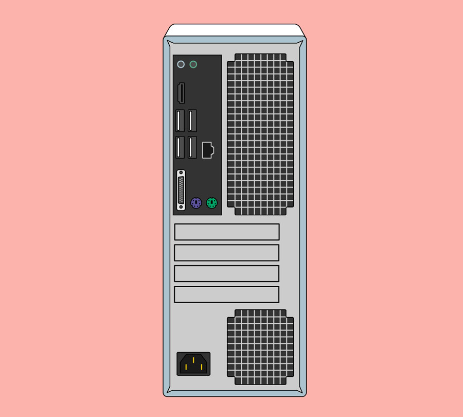

Computer Basics: Buttons and Ports on a Computer
Introduction
Take a look at the front and back of your computer case and count the number of buttons, ports, and slots you see. Now look at your monitor and count any you find there. You probably counted at least 10, and maybe a lot more.
Each computer is different, so the buttons, ports, and sockets will vary from computer to computer. However, there are certain ones you can expect to find on most desktop computers. Learning how these ports are used will help whenever you need to connect something to your computer, like a new printer, keyboard, or mouse.
Front of a computer case
Optical Disc Drive
Often called a CD-ROM or DVD-ROM drive, this lets your computer read CDs and DVDs.

Power Button
The power button is used to power the computer on and off.
Audio In/Audio Out
Many computers include audio ports on the front of the computer case that allow you to easily connect speakers,microphones, and headsets without fumbling with the back of the computer.
USB (Universal Serial Bus) Port
Most desktop computers have several USB ports . These can be used to connect almost any type of device, including mice, keyboards, printers, and digital cameras. They will often appear on the front and back of the computer.
Back of a computer case
The back of a computer case has connection ports that are made to fit specific devices. The placement will vary from computer to computer, and many companies have their own special connectors for specific devices. Some of the ports may be color coded to help you determine which port is used with a particular device.
Audio In/Audio Out
Almost every computer has two or more audio ports where you can connect various devices, including speakers, microphones, and headsets.
Monitor Port
This is where you'll connect your monitor cable. In this example, the computer has both a DisplayPort and a VGA port. Other computers may have other types of monitor ports, such as DVI (digital visual interface) or HDMI (high-definition multimedia interface).
USB Ports
On most desktop computers, most of the USB ports are on the back of the computer case. Generally, you'll want to connect your mouse and keyboard to these ports and keep the front USB ports free so they can be used for digital cameras and other devices.
Ethernet Port
This port looks a lot like the modem or telephone port, but it is slightly wider. You can use this port for networking and connecting to the Internet.
Serial Port
This port is less common on today's computers. It was frequently used to connect peripherals like digital cameras, but it has been replaced by USB and other types of ports.
Expansion Slots
These empty slots are where expansion cards are added to computers. For example, if your computer did not come with a video card, you could purchase one and install it here.
Power Socket
This is where you'll connect the power cord to the computer.
Other types of ports
There are many other types of ports, such as FireWire, Thunderbolt, and HDMI. If your computer has ports you don't recognize, you should consult your manual for more information.